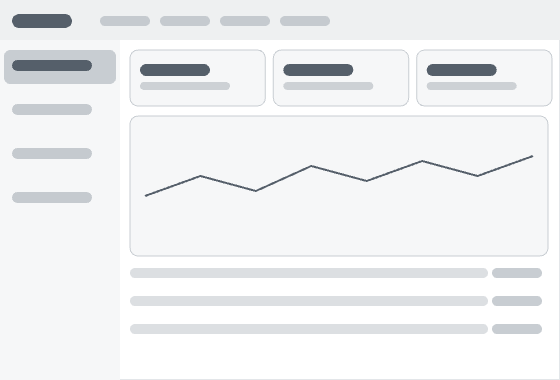
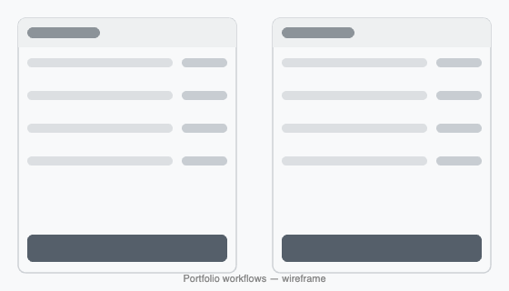
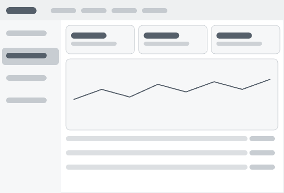
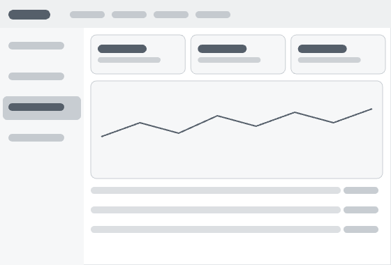

Overview
Clearer workflows for financial advisors
Assetmark provides a wealth management platform used by financial advisors to manage client portfolios, run reports, and execute investment strategies. The existing tools were powerful but dense — burying common tasks behind complex, multi-step workflows.
My role was to simplify these workflows, reducing the cognitive load advisors face daily and making the most frequent actions faster and more intuitive — without sacrificing the depth that professional users rely on.

Workflow redesign
From nine steps to three
Core advisor tasks were spread across dense, multi-step screens. I audited the real workflows and collapsed the most frequent one — building and adjusting a client portfolio — from nine steps across three screens into three steps on a single focused view.
Process
Untangling complex B2B workflows



Results
Intuitive workflows, built to scale
The redesigned workflows made everyday advisor tasks more intuitive, while the design system gave the platform a consistent foundation to grow on.